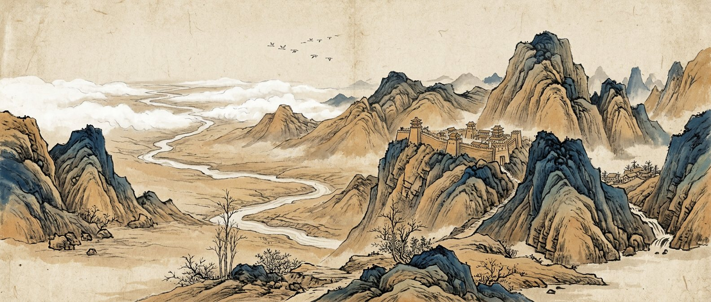
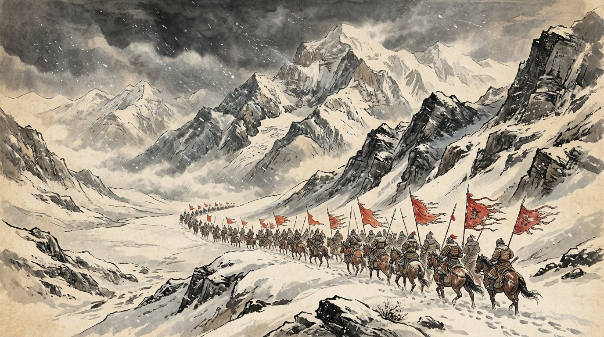
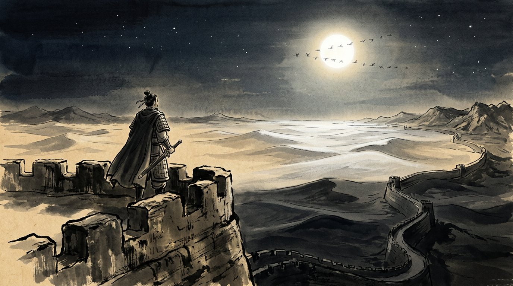
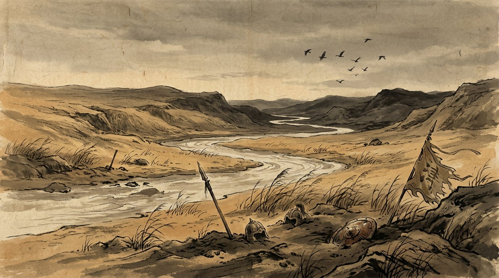

一
《使至塞上》
王维 · 唐
单车欲问边，
属国过居延。
征蓬出汉塞，
归雁入胡天。
大漠孤烟直，
长河落日圆。
萧关逢候骑，
都护在燕然。
读："直"与"圆"两个最简单的字，画出了最辽阔的大漠。Two plain words, "straight" and "round," paint the whole desert.

边塞诗歌集 十八首传唱千年的诗
Moon over the Passes: Classic Chinese Frontier Poems
Eighteen frontier poems sung for a thousand years
Prologue
○ 王昌龄《出塞》其一 · 唐
秦时明月汉时关，万里长征人未还。
但使龙城飞将在，不教胡马度阴山。
第一句只有七个字，却叠了两个朝代：明月还是秦时的明月，关隘还是汉时的关隘，而守关的人换了一代又一代，至今"人未还"。诗人不写一个"悲"字，千年征戍之苦全在"秦汉"二字的错位里。明代李攀龙推此诗为唐人七绝压卷之作。
"The moon of Qin, the pass of Han" — two dynasties folded into one line; the moon and the gate stay, the soldiers never come home.
Five images
Moon · Qiang flute · Willow · The Jade Gate · Returning geese
一明月
人隔万里，共此一轮，最能牵出乡思。
Moon
二羌笛
边地的乐声，一吹就是《折杨柳》《关山月》的离愁。
Qiang flute
三杨柳
与前一页相呼应："羌笛何须怨杨柳"，折柳曲在玉门关外也吹得响。
Willow
四玉门
玉门关 / 阳关，中原与西域的界线，出了关，就是"西出阳关无故人"。
The Jade Gate
五归雁
雁能南归，人不能。
Returning geese
卷一
Landscape of the frontier

一
王维 · 唐
单车欲问边，
属国过居延。
征蓬出汉塞，
归雁入胡天。
大漠孤烟直，
长河落日圆。
萧关逢候骑，
都护在燕然。
读："直"与"圆"两个最简单的字，画出了最辽阔的大漠。Two plain words, "straight" and "round," paint the whole desert.
二
王之涣 · 唐
黄河远上白云间，
一片孤城万仞山。
羌笛何须怨杨柳，
春风不度玉门关。
读：不怨，是因为怨也没用；春风都到不了这里，何况家书。Why blame the willow tune? Even spring wind never reaches the Jade Gate.
三
岑参 · 唐
北风卷地白草折，胡天八月即飞雪。
忽如一夜春风来，千树万树梨花开。
散入珠帘湿罗幕，狐裘不暖锦衾薄。
将军角弓不得控，都护铁衣冷难着。
瀚海阑干百丈冰，愁云惨淡万里凝。
中军置酒饮归客，胡琴琵琶与羌笛。
纷纷暮雪下辕门，风掣红旗冻不翻。
轮台东门送君去，去时雪满天山路。
山回路转不见君，雪上空留马行处。
读：结尾不说不舍，只看雪地上留下的马蹄印——这正是"折柳"式的含蓄。He doesn't say he'll miss his friend; he only watches the hoofprints left in the snow.
四
李白 · 唐
明月出天山，苍茫云海间。
长风几万里，吹度玉门关。
汉下白登道，胡窥青海湾。
由来征战地，不见有人还。
戍客望边色，思归多苦颜。
高楼当此夜，叹息未应闲。
读：一轮月同时照着戍客与高楼上的妻子，两地叹息，一句未写相思。One moon lights the soldier and the wife in her tower; both sigh.
卷二
Courage and resolve

五
王昌龄 · 唐
青海长云暗雪山，
孤城遥望玉门关。
黄沙百战穿金甲，
不破楼兰终不还。
读：铠甲都磨穿了，誓言还没变。The armor is worn through; the vow is not.
六
杨炯 · 唐
烽火照西京，
心中自不平。
牙璋辞凤阙，
铁骑绕龙城。
雪暗凋旗画，
风多杂鼓声。
宁为百夫长，
胜作一书生。
读：一个书生的直抒胸臆：宁可上阵，不愿只读书。A scholar says it straight: better a captain than a bookworm.
七
李贺 · 唐
黑云压城城欲摧，甲光向日金鳞开。
角声满天秋色里，塞上燕脂凝夜紫。
半卷红旗临易水，霜重鼓寒声不起。
报君黄金台上意，提携玉龙为君死。
读：浓墨重彩，像一幅压城的战争画。Painted in the heaviest colors: black clouds, gold scales, violet dusk.
八
卢纶 · 唐
林暗草惊风，
将军夜引弓。
平明寻白羽，
没在石棱中。
读：化用李广射石的典故，只写天亮后去找箭。Only at dawn do they find the arrow, buried in stone.
九
卢纶 · 唐
月黑雁飞高，
单于夜遁逃。
欲将轻骑逐，
大雪满弓刀。
读：故事停在追击之前，一场大雪替你想象后面。The poem stops before the chase; the snow on the blades tells the rest.
卷三
Homesickness

十
王翰 · 唐
葡萄美酒夜光杯，
欲饮琵琶马上催。
醉卧沙场君莫笑，
古来征战几人回？
读：笑着劝酒，最后一问却叫人心沉。A toast, then the question that sinks the heart.
十一
李益 · 唐
回乐峰前沙似雪，
受降城外月如霜。
不知何处吹芦管，
一夜征人尽望乡。
读：不写一个人哭，只写"一夜""尽望乡"。No one weeps on the page; a whole army simply looks toward home.
十二
王昌龄 · 唐
琵琶起舞换新声，
总是关山旧别情。
撩乱边愁听不尽，
高高秋月照长城。
读：愁说不尽，于是抬头看月——以景结情。When sorrow has no end, he looks up at the moon over the Wall.
十三
岑参 · 唐
故园东望路漫漫，
双袖龙钟泪不干。
马上相逢无纸笔，
凭君传语报平安。
读：千言万语，只托一句"平安"。A thousand words, and he sends just one: "safe."
十四
范仲淹 · 宋
塞下秋来风景异，衡阳雁去无留意。
四面边声连角起，千嶂里，长烟落日孤城闭。
浊酒一杯家万里，燕然未勒归无计。
羌管悠悠霜满地，人不寐，将军白发征夫泪。
读：将军与士兵，同一夜无眠。General and private, sleepless on the same night.
卷四
The cost of war

十五
陈陶 · 唐
誓扫匈奴不顾身，
五千貂锦丧胡尘。
可怜无定河边骨，
犹是春闺梦里人。
读：河边已是白骨，闺中还在梦里等他。Bones by the river; in a spring bedroom, still a dream of him.
十六
曹松 · 唐
泽国江山入战图，
生民何计乐樵苏。
凭君莫话封侯事，
一将功成万骨枯。
读：七个字的反战宣言。Seven characters against war: one general's glory, ten thousand bones.
十七
李颀 · 唐
白日登山望烽火，黄昏饮马傍交河。
行人刁斗风沙暗，公主琵琶幽怨多。
野云万里无城郭，雨雪纷纷连大漠。
胡雁哀鸣夜夜飞，胡儿眼泪双双落。
闻道玉门犹被遮，应将性命逐轻车。
年年战骨埋荒外，空见蒲桃入汉家。
读：多少战骨，只换来葡萄入汉。Years of bones in the wasteland, and all the empire gets is grapes.
十八
王维 · 唐
渭城朝雨浥轻尘，
客舍青青柳色新。
劝君更尽一杯酒，
西出阳关无故人。
放在最后，作为"出关前的最后一杯酒"，与前一页《杨柳依依》相接。The last cup before the Yang Pass — bridging back to the willow page.
Two voices
杨炯"宁为百夫长，胜作一书生"、王昌龄"不破楼兰终不还"——豪情直接喊出来，气势如鼓角。
Said outright, like a war drum.
李益"一夜征人尽望乡"、岑参"雪上空留马行处"、王昌龄"高高秋月照长城"——最深的情绪交给月、雪、笛声。
Left to the moon, the snow, the flute.
边塞诗之所以千年传唱，正因为两种声音并存：一面是报国的热血，一面是望乡的沉默。
Frontier poetry endures because it holds both: the war drum and the silent look toward home.
春风不度玉门关
关